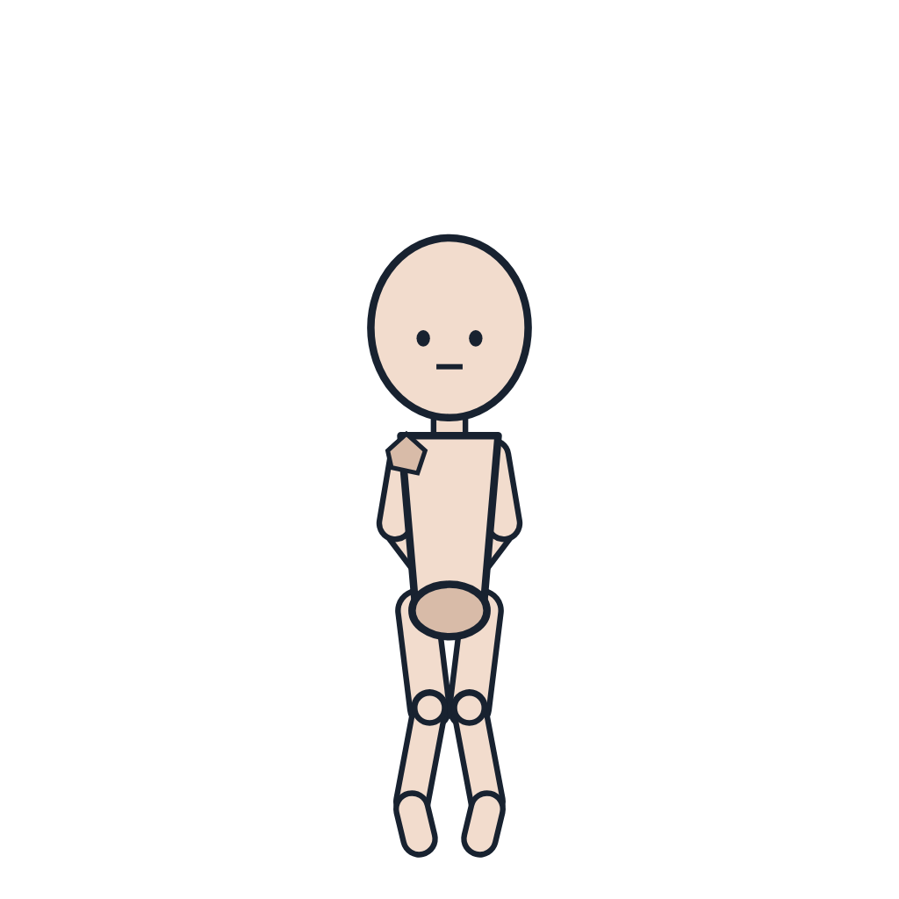
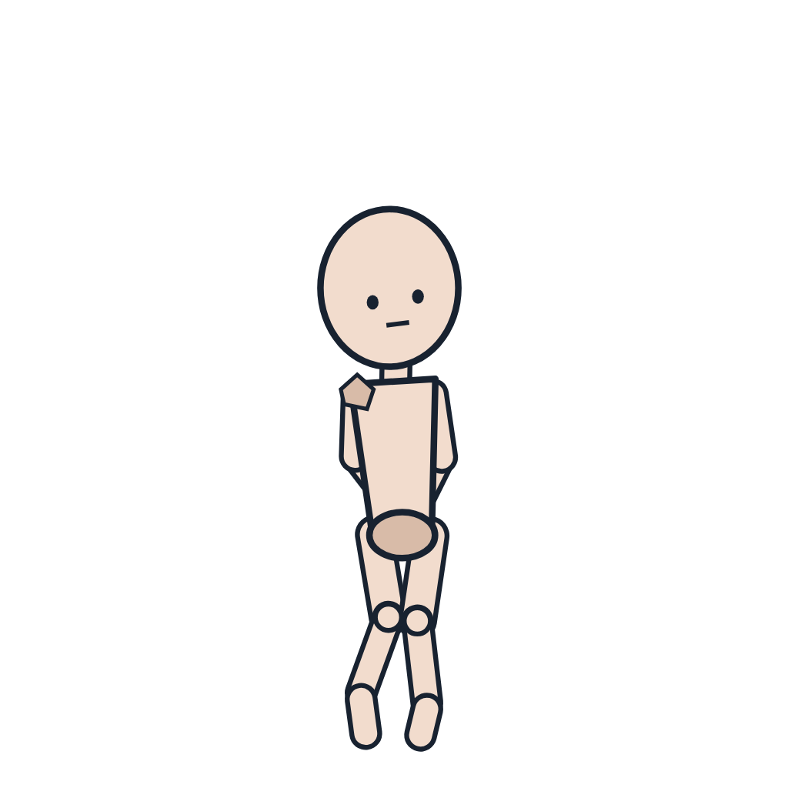

後ろ手に縛られて身をよじる
| 体勢 | 立つ |
|---|---|
| 腕 | 後ろ手（手首を背中でまとめる） |
| 脚 | 膝を閉じる |
| 押さえ | 両手首 |
| 動き | 腰をくねらせる。膝をすり合わせる。かかとを交互に上げる。下を向く |


from front, facing viewer, standing, arms behind back, looking down, closed mouth, clenched teeth, wrists together

from front, facing viewer, standing, arms behind back, looking down, closed mouth, clenched teeth, wrists together